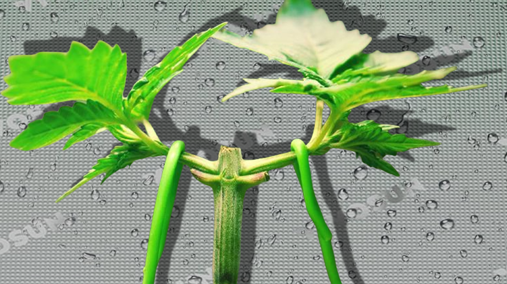
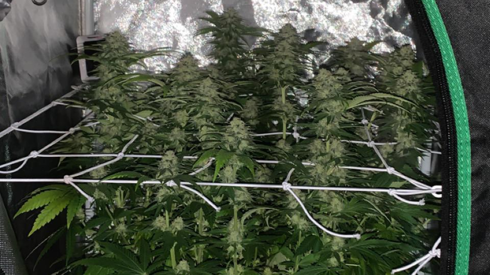

How-To Grow Fire Weed On A Budget
Yo, wanna grow dank buds without blowing your paycheck? This guide’s got you covered with the Vivosun 24” x 24” x 48” Grow Tent Kit, cheap nutrients, soil, and feminized seeds. Budget gear’s got flaws, but we’ve got fixes that won’t break the bank. Learn low-stress training (LST) and topping to max out yields in a tight space. Fire weed for around $510? Let’s make it slap! As an Amazon Associate, we earn from qualifying purchases.
Your Budget Grow Shopping List
| Item | Description | Cost | Link |
|---|---|---|---|
| Vivosun Grow Tent Kit | 24” x 24” x 48” tent, VS1000 LED, fan, filter, grow bags, camera | $329.99 | Buy Now |
| FloraNova Grow & Bloom | Single-bottle nutrients for veg and flower | $33.19 | Buy Now |
| Roots Organic Soil | 1.5 cu ft organic potting soil 2pk | $69.99 | Buy Now |
| Feminized Seeds | 4-pack (e.g., Northern Lights) | $55.00 | Buy Now |
| Vivosun pH pen | 0.01pH High Accuracy | $7.99 | Buy Now |
| Plant Ties | 164 ft | $7.99 | Buy Now |
| 3M Duct Tape | 20 Yards, Water-Resistant Backing, Black | $6.57 | Buy Now |
| Total | $510.72 | ||
Too stoned to read? Check out our video for the same dank tips!
Note: YouTube login required for age-restricted content.
The Vivosun Grow Tent Kit: What You Get
The Vivosun 24” x 24” x 48” Complete Grow Tent Kit ($329.99, Amazon) is a budget grower’s dream, packing everything for 1-4 plants in a small space. You get a 2x2x4’ tent, a 100W VS1000 LED with Samsung LM301 diodes (2.75 μmol/J), a 190 CFM ventilation system (fan, carbon filter, ducting), five 5-gallon grow bags, trellis netting, rope hangers, pruning shears, grow glasses, a temp/humidity monitor, a timer, and a 2K QHD WiFi camera for timelapse videos (MicroSD card needed). Amazon’s deal beats Vivosun’s site, with free shipping and a camera bonus.
Real Talk: It’s a steal, but budget gear has quirks. We’ll fix ’em cheap below.
Fixing Budget Gear Flaws
Grow Dank for $500: Duct Tape, Vivosun, and Ballsy Hacks! #GrowAppBudgetGrow
- Sticky/Broken Zippers: Zippers can jam or snap. Rub candle wax or soap for smooth gliding. If one breaks, slap Velcro strips ($5-10) save the day. Go easy to avoid stress.
- Light Leaks: Seams can leak light, screwing your 12/12 flower cycle. Seal with black duct tape ($6) inside. Toss a dark blanket over the tent or stick it in a dark closet.
- 4’ Height Limit: Tall plants get light burn. LST and topping (below) keep ’em under 3’. Set grow bags on the floor for max space.
- Loud Fan: The 190 CFM fan buzzes. Wrap it in foam or use a rubber mat ($10). Straighten ducting to cut noise.
- Thin Fabric: Tent can tear. Reinforce corners with duct tape before setup and don’t overstuff.
Fix Cost: ~$25 for tape, Velcro, and mats. Hit Vivosun’s customer service for warranty claims.
Training Plants for Max Yields
The 4’ tent demands short plants. Low-stress training (LST) and topping are your go-to for fat buds in tight spaces.
- LST: Day 14 (early veg), bend the main stem to a 45° angle with soft plant ties ($7.99). Anchor to grow bag edges or the kit’s trellis netting. Tweak weekly for a flat canopy. Keeps plants 2-3’ tall and hits more bud sites. Dig GrowWeedEasy’s LST guide for visuals.
- Topping: Day 21 (veg), use the kit’s shears to snip the main stem above the 4th node, making two colas. Repeat on new tops for four if space allows. Controls height and doubles buds. GrowWeedEasy’s topping tutorial nails it.
Pro Tip: Mix LST and topping for a bushy plant with 4-8 fat colas. Use the kit’s camera to track growth and flex timelapse vids on X with #GrowAppBudgetGrow!
Nutrients & Soil: Keep It Simple
Don’t overthink feeding—go easy to avoid nutrient burn.
Nutrients: FloraNova Grow & Bloom ($33.19, Amazon). Grow (veg, weeks 2-6) builds roots and leaves; Bloom (flower, weeks 8-11) packs trichomes. Start at ¼ strength, mix with pH’d water (5.8-6.2), and follow the bottle’s chart. Increase to ½ strength around week 4 if plants look healthy.
- Soil: Roots Organic Original Soil ($69.99, 1.5 cu ft 2X). Pre-amended, forgiving, and perfect for the kit’s 5-gallon bags. Water when the top inch is dry. note: we're recommending the 2pk to fill four 5 gallon pots. 1.5 cu ft = 11.2208 gallons
Quick Tip: Overfeeding burns leaves. If they curl, flush with pH’d water and halve nutrients. Grab a pH pen ($7.99) to keep water at 5.8-6.2—bad pH locks out nutrients.
Seeds: Feminized for Fire
Autoflowers? Nah, they’re finicky with weak yields. Feminized photoperiod seeds bring bigger harvests and easier grows.
- Seedsman: Seedsman ships worldwide, with 4 feminized seeds for ~$50, often with freebies. Stock can be limited, so check availability.
- Seed Supreme: Seed Supreme (USA-only) offers 4 seeds for $55 plus 4 free. Solid for stateside growers.
- Strains: Northern Lights or Blue Dream—stable, bushy, and tent-friendly.
How: Germinate 1-4 seeds (paper towel method) and plant in Roots Organic soil. Need help? GrowWeedEasy’s seed guide got you.
What If It Goes Wrong?
Yellow Leaves? Usually overwatering or nutrient burn. Check soil—water only when the top inch is dry. Flush with pH’d water and cut nutrients by half. More issues? the Plant Doctor is clutch.
Beginner’s Checklist
- Grab the Vivosun kit, nutrients, soil, and seeds.
- Reinforce tent seams and test zippers during setup.
- Germinate 1-4 feminized seeds and plant in 5-gallon bags.
- Keep light 18-24” above plants, temps at 75-85°F, humidity at 60-70% (early veg), dropping to 50-60% (late veg).
- Start LST (day 14) and top (day 21) for short, bushy plants.
- Feed FloraNova at ¼ strength with pH’d water, increasing to ½ strength around week 4 if plants look healthy.
- Record timelapse vids and share on X with #GrowAppBudgetGrow!
FAQs for Growing Loud
Can I grow autoflowers in this tent?
You can, but we don’t recommend autos for beginners. They’re picky about light and yield less. Stick with feminized photoperiods like Northern Lights for easier grows and bigger buds. GrowWeedEasy explains why.
How do I set up the timelapse camera?
The Vivosun kit’s 2K QHD camera needs a MicroSD card (up to 128GB). Mount it in the tent, connect to WiFi via the app, and set timelapse mode. Check the manual for details or hit up Vivosun’s support.
What’s the best pH pen for beginners?
A cheap digital pH pen like this one ($7.99) works fine. Calibrate it monthly and store in pH 4.0 solution. GrowWeedEasy has a detailed guide.
Can I upgrade the light later?
The VS1000 LED is solid for 2x2, but you can upgrade to a 200W light like a Spider Farmer SF-2000 for denser buds. Check our LED guide for picks.
Wrap-Up
For ~$510, the Vivosun kit, FloraNova, Roots Organic soil, and feminized seeds set you up for 2-4 oz of fire weed per cycle as a beginner, with up to 4-8 oz possible as you master LST and topping. Patch zippers and leaks with $25 in supplies, train plants to fit the 4’ tent, and keep feeding simple. In 12-16 weeks, you’ll be puffing homegrown that slaps harder than dispensary bud. Got questions? Check GrowWeedEasy or flex your grow on X with #GrowAppBudgetGrow! Grab the Vivosun kit and let’s grow dank!
References
Grower-vetted sources to level up your budget grow, hand-picked by the GrowApp crew!
- Low Stress Training (LST) Tutorial GrowWeedEasy View Source
- How to Top Cannabis Plants for Better Yields GrowWeedEasy View Source
- How often should I give my cannabis plants nutrients? ILGM View Source
- The Most Creative Places to Grow Cannabis Royal Queen Seeds View Source
- Budget Grow Tent Setup Tips Grower buzz on X, compiled by GrowApp (2025)